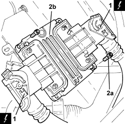
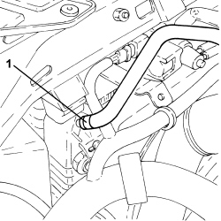
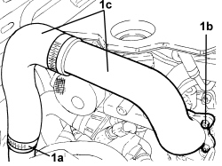
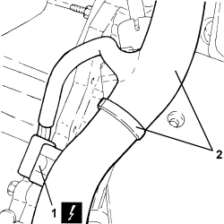
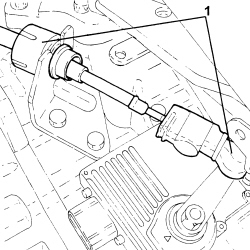
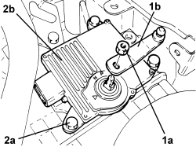

2135B52 ELECTRONIC AUTOMATIC TRANSMISSION ELECTRIC CIRCUIT -ECU MOUNT R R
- Path
- Procedures > 21 GEARBOX UNIT > 2135 AUTOMATIC TRANSMISSION EXTERNAL CONTROLS > 2135B AUTOMATIC TRANSMISSION ELECTRICAL CONTROLS > 2135B52 ELECTRONIC AUTOMATIC TRANSMISSION ELECTRIC CIRCUIT -ECU MOUNT R R
- Kind
- repair procedure (removal / refitting; the operation number is the code)
- Applies to
- engines: 2.2, 1.9 JTD 16v, 2.4 JTD 20v; all production periods; only with equipment: AUTOMATIC TRANSMISSION
- Interactive page
- https://sloeber94.github.io/elrnDB-fCrm/en/#/194002338
Applies to: engines: 2.2; all production periods
 Removing
Removing
 Refitting
RefittingOp. 5530B52 BATTERY SUPPORT/DRIP TRAY - R.R
1. Disconnect the electrical connector from the electronic automatic transmission control unit.
Description | Connector | |
|---|---|---|
1 | Automatic transmission control unit |
2. Undo the bolts (2a) and remove the electronic automatic transmission control unit (2b).

Applies to: engines: 2.2; all production periods
Refitting
Removing- Place the control unit for the electronic automatic transmission in its housing and secure it using the bolts.
- Connect the electrical connections to the electronic automatic transmission control unit.
Applies to: engines: 1.9 JTD 16v, 2.4 JTD 20v; all production periods
Removing
RefittingOp. 5530B52 BATTERY SUPPORT/DRIP TRAY - R.R
- Move the gear selector to position "N".
1. Loosen the band and disconnect the coolant return pipe to the engine coolant reservoir, reservoir side, and move aside.

Applies to: engines: 1.9 JTD 16v, 2.4 JTD 20v; all production periods
1. Loosen collar (1a), unscrew bolts (1b) and remove the air delivery pipe from the turbocharger air-air heat exchanger to the throttle body (1c).

Applies to: engines: 1.9 JTD 16v, 2.4 JTD 20v; all production periods
1. Disconnect the electrical connector from the electronic automatic transmission system control unit.
Description | Connector | |
|---|---|---|
1 | Automatic transmission control unit |
2. Release the electrical wiring from the fastenings and move aside.

Applies to: engines: 1.9 JTD 16v, 2.4 JTD 20v; all production periods
1. Disconnect the gear selection cable from the gear selector and reaction bracket.

Applies to: engines: 1.9 JTD 16v, 2.4 JTD 20v; all production periods
1. Undo nut (1a) and remove lever (1b) from the gear selector on the automatic transmission.
2. Undo the bolts (2a) and remove the electronic automatic transmission control unit (2b).

Applies to: engines: 1.9 JTD 16v, 2.4 JTD 20v; all production periods
Refitting
Removing- Place the control unit for the electronic automatic transmission in its housing and secure it by tightening the bolts to the specified torque.
Component | Fastening | dia | Value (daNm) | Validity |
|---|---|---|---|---|
Electronic automatic transmission system control unit | Bolt | - | (automatic gearbox side) 2.5 | 1.9 JTD 16v CAE 2.4 JTD 20v CAE |
- Place the lever in position on the gear selector and secure it tightening the nut to the recommended torque.
Component | Fastening | dia | Value (daNm) | Validity |
|---|---|---|---|---|
Gear selection lever | Nut | (gear selector side) 1.4 - 1.8 | 1.9 JTD 16v CAE 2.4 JTD 20v CAE |
- Connect the gear selector cable to the gear selector and to the bracket.
- Refit the electrical wiring in its seat and secure.
- Connect the electrical connections to the electronic automatic transmission control unit.
- Refit the turbocharger air-air heat exchanger air delivery pipe to the throttle body in its seat, then secure with the bolts and collar.
- Connect the coolant return pipe to the engine coolant supply reservoir, radiator side and tighten the band.
Op. 5530B52 BATTERY SUPPORT/DRIP TRAY - R.R
- Connect an Examiner and run the self-learning procedure.
Topics linked from this page (3)
- 5530B10 BATTERY - R+R
- 5530B52 BATTERY SUPPORT/DRIP TRAY - R.R
- M055 AUTOMATIC TRANSMISSION CONTROL UNIT
Topics that link to this page (6)
- Y098 U1711 - CAN NETWORK (NCM - NCA)
- 1060GK CHECK CONTROL UNIT SOFTWARE AND HARDWARE
- 5505AE ENGINE MANAGEMENT CONTROL UNIT POWER SUPPLY FUSE CIRCUIT CHECK
- 5505AE ENGINE MANAGEMENT CONTROL UNIT POWER SUPPLY FUSE CIRCUIT CHECK
- 5520BA DIESEL PREHEATING RELAY CHECK
- 2130B48 GEAR SELECTOR ON AUTOMATIC TRANSMISSION - R R